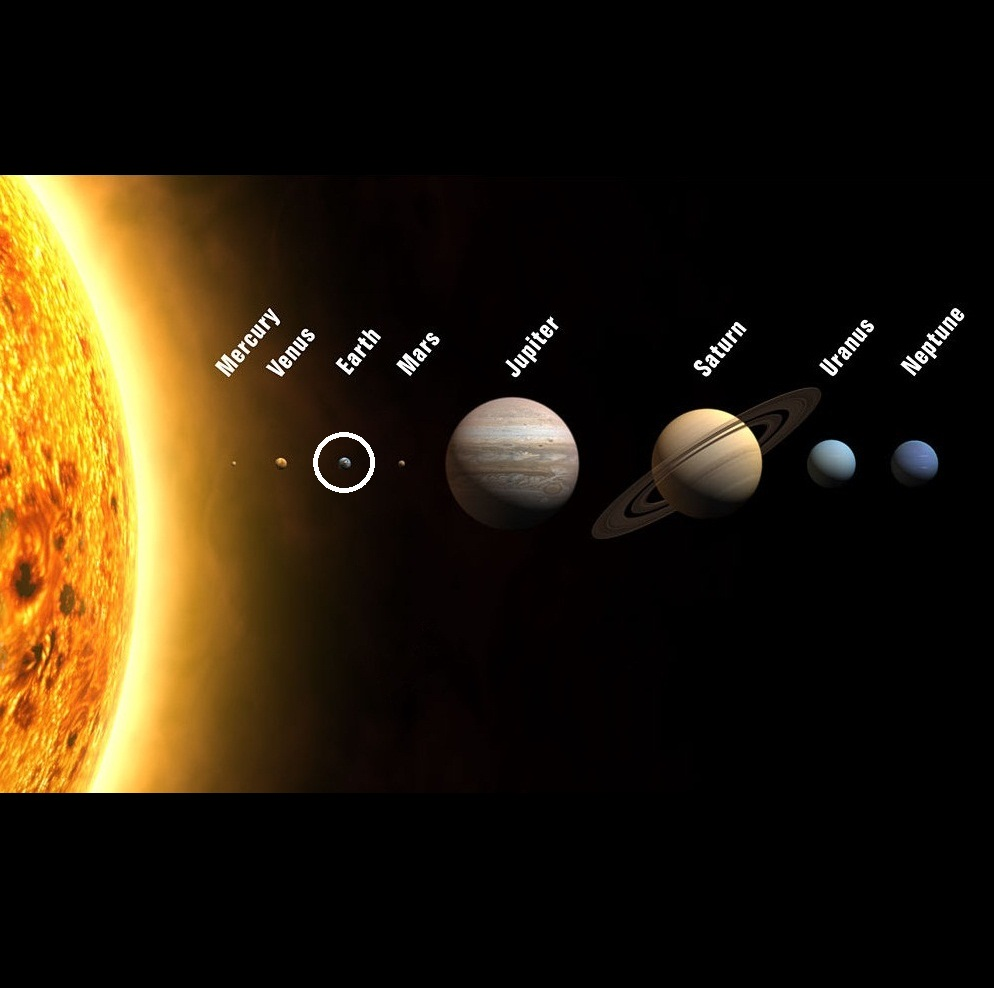

Земјата — една од осумте планети во Сончевиот систем. Таа е трета земја по оддалеченост од Сонцето и најголема планета со цврста површина, за разлика од гасовитите „џинови”. Планетата земја има еден природен сателит, Месечината, и засега е единствената позната планета на која има живот. Во геологијата преовладува мислењето дека земјата е стара околу 4,6 милијарди години, што е потврдено со одредувањето на времето на полураспаѓање на ураниумот и ториумот
Едно деноноќие трае 117 земјини денови, една година трае 225 земјини денови. Венера нема природни сателити.
Земјата има и магнетно поле кое, заедно со атмосферата, ја штити од зрачење (штетно по живите суштества кои ја населуваат земјата). Атмосферата, исто така служи и како штит за одбивање на помалите метеори, кои поминувајќи низ неa согоруваат пред да стигнат до земјената површина.

Карактеристики на Земјата
По големина, земјата е петта во сончевиот систем. За разлика од некои други планети, земјата не е гасовит џин, каква што е Јупитер на пример. Земјата има цврста површина како и Меркур, Венера и Марс, од кои земјата е најголема, со најголема густина, најсилна гравитација и најсилно магнетно поле. Генерално, земјата се состои од атмосфера, биосфера, хидросфера и нејзините внатрешни градби под површината.
Атмосферата ја сочинуваат повеќе слоеви, а се протега на повеќе од 100 км над површината. Нејзе ја сочинуваат: 78% азот, 21% кислород, 0,93% аргон, 0,03% јаглерод диоксид и мали количини на водена пареа и други гасови. Слоеви на атмосферата:
тропосфера (до височина од околу 12 км) е најнискиот и најгустиот дел од атмосферата во кој се одвиваат сите временски појави. Во овој слој температурата опаѓа во зависност од висината. Содржи голема количина на водена пареа.
стратосфера (до височина од околу 50 км) содржи озон кој не штити од штетните зрачења во вселената. Во пониските слоеви, температурата е постојана, а во повисоките се зголемува. Ветровите кои дуваат во стратосферата достигнуваат брзина од неколку стотини км/ч.
мезосфера (до височина од околу 85 км) е слој во кој се случува нагло опаѓање на температурата.
јоносфера или термосфера (до височина од околу 500 км) содржи јони, наелектризирани честички. Во овој слој на атмосферата, под влијание на сончевиот ветер, се создава поларна светлина. Температурата се накачува се до височина од 400 км.
егзосфера. Егзосферата е прелазен прстор кон вакуумот. Таа е слој со многу разредени гасови и се простира на височина од над 500 км.
Преодните простори помеѓу слоевите на атмосферата се: тропопауза, стратопауза и мезопауза.
Слично како и Марс, релативно во однос на ѕвездите, на земјата и е потребно во просек 23 часа, 56 минути и 4.091 секунда за ротација околу оската (ротационен период или ѕвезден ден) која ги спојува северниот и јужниот пол.
Земјата кружи по патеката на својата орбита околу сонцето за 365.2564 (револуција) главни ѕвездени денови и се наоѓа на просечна оддалеченост околу 150 милиони километри (93.2 милиони милји) од сонцето. Насоката на револуцијата на Земјата околу сонцето е спротивна од насоката на стрелките на часовникот, односно насоката на кружење на земјата околу сонцето е спротивна од насоката на кружење на сонцето околу својата оска.
Изместувањето од 23,5°, наречено „осен наклон“ предизвикува поголемо загревање и подолг ден, во текот на годината, на едната или на другата хемисфера што предизвикува циклични промени на годишните времиња.
Дознај повеќе за Земјата
| Апхел |
152.098.232 км 1.01671388 А |
| Перихел |
147.098.290 км 0.98329134 АЕ |
| Голема полуоска |
149.598.261 км 1,00000261 АЕ |
| Орбитален период |
365,256363004 денови 1,000017421 јул. год. |
| Ѕвезден период |
583.92 денови |
| Просечна орбитална брзина |
35.02 km/s |
| Познати сателити |
1(Месечината) |